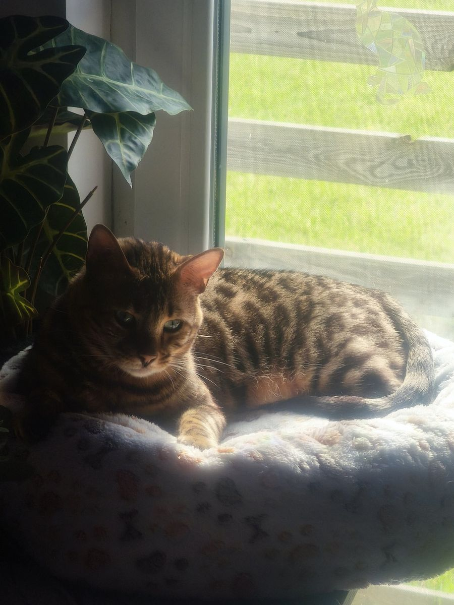

The Bengal Cat Breed: Personality, Care and Facts
The Bengal is a domestic cat breed with a wild-looking spotted or marbled coat and a very active, curious personality. It needs more play and attention than an average house cat.

Where Do Bengal Cats Come From?
Bengals were developed in the United States by crossing domestic cats with the Asian leopard cat, a small wild cat. The goal was a pet with a wild look and a friendly, domestic temperament. Today's Bengals are bred from Bengal to Bengal and are fully domestic cats.
What Does a Bengal Look Like?
Some Bengals have a "glitter" coat: the fur shines in the light as if it had a thin layer of gold dust.
What Is a Bengal's Personality Like?
- Very active. Bengals love to run, jump and climb.
- Smart and curious. They learn quickly and like to explore everything.
- Playful for life. Many stay kitten-like even as adults.
- Social. They usually want to be close to their people and take part in everything.
You can see what this looks like in real life on the page about Mika, our Bengal cat.
How to Keep a Bengal Happy at Home
- Play actively with your Bengal every day, for example with a wand toy.
- Give it places to climb: a tall cat tree or wall shelves.
- Use puzzle feeders and change toys so it doesn't get bored.
- Keep a routine: Bengals like to know what happens and when.
- Visit the vet regularly, like with any cat.
Common Questions About Bengal Cats
Are Bengal cats good indoor cats?
Yes, if they get enough play and space to climb. A Bengal kept indoors needs daily active play, a tall cat tree and toys that make it think.
Do Bengal cats like water?
Many Bengals are curious about water and like to play with a dripping tap or a bowl of water. Not every Bengal does, so it depends on the cat.
Are Bengals talkative?
Many Bengals are vocal and use different sounds to ask for food, play or attention.